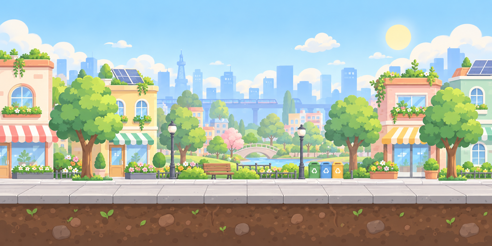
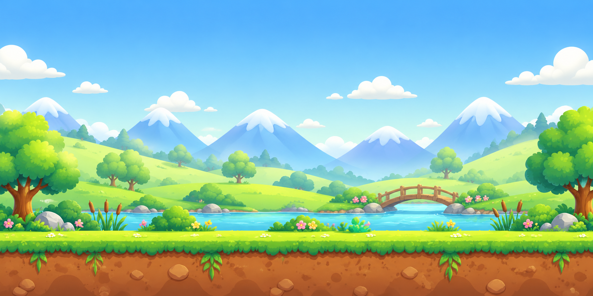
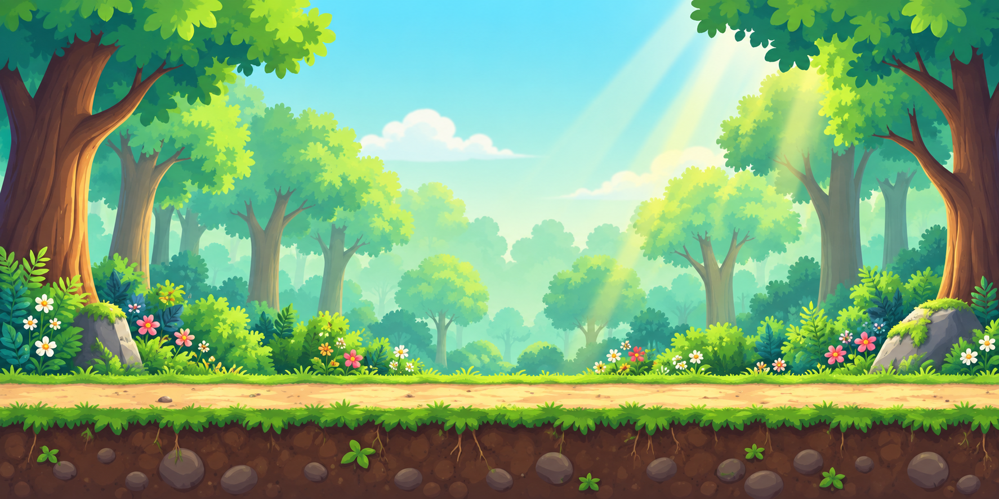

← →左右移動也支援 A / D
Space × 2跳躍 / 二段跳也支援 ↑ / W
1 2 3目前角色的專屬技能也可按 E
🎮 操作與遊戲規則
- 方向鍵 ◄ ►：左右自由移動。手機可按住畫面下方的左、右按鈕，一邊移動一邊點跳躍。
- ⬆ / 空白鍵：跳躍。手機點畫面右下方「跳躍」按鈕，空中再點一次可二段跳；旁邊的技能按鈕會顯示冷卻進度。手機遊戲採滿版介面，橫向可看見更遠的道路；支援的瀏覽器可點「全螢幕」隱藏網址列。
- ✨ 技能快捷鍵：藍衣男孩按 1、雙馬尾女孩按 2、灰髮男孩按 3。上排數字鍵與數字鍵盤都支援；按 E 或點技能按鈕，也能使用目前角色的技能。
- 綠色 ♻ 加生命垃圾：紙箱、寶特瓶、鋁罐，碰到後增加 1 顆生命並得 40 分（最多 5 顆）。
- 紅色 ⚠ 扣生命垃圾：碎掉的雞蛋、破掉的手機、黑色垃圾、魚骨頭，碰到後扣 1 顆生命，請避開！
- 🌈 累積 1000 分：柔和彩虹會在天空中逐漸浮現，進入森林後也會保留。
- 🏭 煙囪：碰到扣 1 顆生命。噴氣前會閃黃燈並顯示「即將噴氣！」約 1 秒，可先跳開或等待。
- 💨 CO₂：碰到扣 1 顆生命並短暫擊退，接著有 1 秒無敵時間，避免同一團煙連續扣血；護盾期間可安全通過。
- 煙囪難度逐關增加：城市每 6 秒噴氣 0.8 秒、河岸每 5 秒噴氣 1 秒、森林每 4 秒噴氣 1.2 秒。每輪都先預警 1 秒；霧霾事件會延長噴氣時間 0.8 秒。
🗺 三段環保旅程
城市維持基本速度；600 分進入河岸後平順加速 5%，1200 分進入森林後提高至 10%。強風有速度上限。點畫面右上方「↻ 重新遊戲」會回到首頁，可重新選擇角色；按「開始遊戲」後，分數、生命與技能冷卻都會重置。
- ♻ 連續回收獎勵
每連續回收 10 件，額外 +100 分並出現慶祝特效。地面回收物、空中回收物、補給與技能吸附都計入。連段沒有時間限制，受到傷害才中斷；護盾成功擋住傷害不會中斷。

🏙 繽紛城市0～599 分回收紙箱與鋁罐，跳過街道煙囪。

🏞 山谷河岸600～1199 分挑戰高低交錯石頭，用二段跳取得高處瓶罐；1000 分迎接彩虹。

🌳 陽光森林1200 分起清理紙箱與瓶子，跳過樹樁；2000 分後走向終點旗。
依分數自動前進，背景柔和切換。河岸的小石頭可用單跳越過，高石柱需二段跳；有「低→高→低」、「低→高」與「高→低」組合，高處有回收物獎勵。組間留有落地空間。石頭與樹樁碰到也會扣生命；只有排氣煙囪會噴出 CO₂。
✨ 三個角色的專屬技能
- 🛡 藍衣男孩｜1 守護護盾
持續 4 秒，抵擋有害垃圾、煙囪碰撞與 CO₂；冷卻 12 秒。
- 🧲 雙馬尾女孩｜2 回收磁力
持續 6 秒，吸附附近 180 像素內的回收物與補給；冷卻 14 秒。
- 🌱 灰髮男孩｜3 淨化脈衝
立即清除附近 260 像素內的 CO₂，並增加 10 點 Eco；冷卻 16 秒。
- 每局使用所選角色的技能。「冷卻」是技能使用後，必須等待才能再次使用的時間，從發動時開始計算。例如護盾保護 4 秒，發動滿 12 秒後就能再次使用。下方技能欄會顯示生效與冷卻倒數。按住按鍵不會連續發動。
🌦 隨機冒險事件
- 🎁 清潔隊補給｜6 秒
前方出現 4 件回收物，每件增加 20 分與 6 點 Eco。開場 8 秒固定出現第一波補給；事件結束後，尚未收集的補給仍留在地圖上。
- 🍃 強風來襲｜8 秒
風會將角色與煙霧推向右方。向右移動更快，向左移動會變慢；站著不動也會被風推動。
- 🌫 霧霾警報｜8 秒
畫面出現薄霧，煙囪噴氣更頻繁。利用二段跳、護盾或淨化技能避開 CO₂。
- 每次事件結束後，休息 14～22 秒，再隨機出現下一個不同事件；遊戲上方會顯示事件內容與剩餘時間。